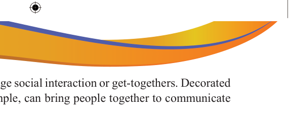

Social interaction: It can encourage social interaction or get-togethers. Decorated homes or public places, for example, can bring people together to communicate and share experiences.
Cultural and historical Significance: It can preserve cultural and historical significance. Traditional ornaments, symbols, or art facts can represent a personal, societal or national heritage and help keep cultural practices alive.
Steps in creating a simple decorative drawing
Simple decorative drawings require an artist to go through several processes to create them. The processes include conception, analysis of the idea, planning, and production as discussed below:
Concept development: This is the initial stage where the artist comes up with the idea for the decorative drawing. It involves brainstorming and visualising what the final piece will look like. Artists can be inspired by both natural and non-natural sources. The place where the decoration is going to be done also has a big role in influencing the type of decoration. For example, animal images cannot be used for decoration in hospitals.
Analysis of idea: At this stage, the artist has to analyse the inspired idea to get the most of interest. Then, the artist has to create preliminary sketches of the types of decoration images to be drawn.
Planning: This involves a decision on the material, equipment to be used, the size of the place and image, techniques to be used and any other necessary information like the location of the place and other technical aspects. The artist may also create preliminary sketches during this stage.
Production: This is the final stage where the artist draws the decoration according to the prepared plans.

Activity 2.8
Use the provided steps in making simple decorative drawings to practice the following:
(a) Make a simple decorated drawing of a flower on a fabric material.
(b) Make a simple decorative drawing of fish on a piece of paper.